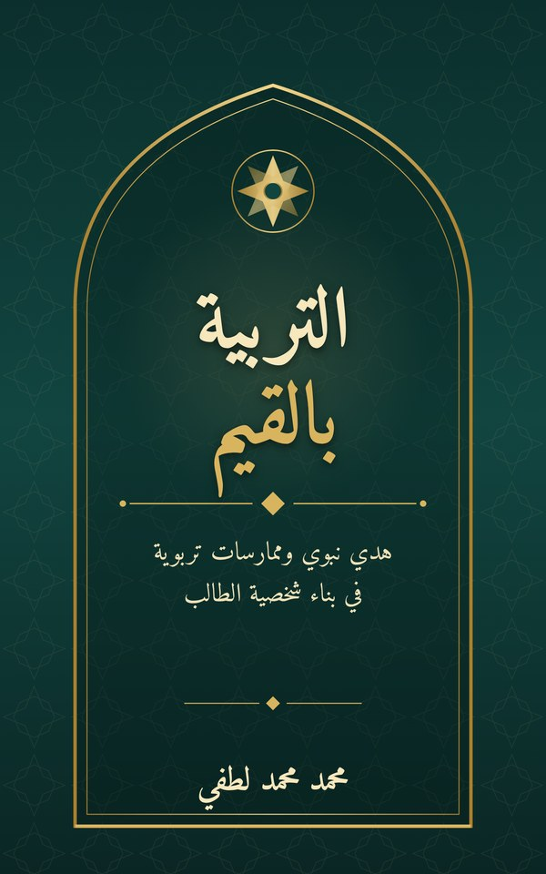

تربية
التربية بالقيم
هدي نبوي وممارسات تربوية في بناء شخصية الطالب، في ثمانية أبواب.
شاعر له قصائد في حب الإمارات · معلم اللغة العربية
عضو المجلس الرقابي في الاتحاد العالمي للمسندين
أكتب للمعلم الذي يريد أن يربّي قبل أن يعلّم، وللقارئ الذي يحب العربية ويريد أن يفهم أسرارها.
محمد محمد لطفي عبد الغني القطاوي شاعر له عدة قصائد في حب دولة الإمارات العربية المتحدة، ومعلّم للغة العربية فيها، وكاتب، يؤمن بأن تعليم العربية لا ينفصل عن تربية الإنسان، وأن الكلمة الصادقة قد تبني شخصية كاملة.
تخرّج في قسم اللغة العربية وآدابها بكلية الآداب، جامعة المنصورة، وبدأ رحلته في التعليم متطوّعًا في مصر، ثم انتقل إلى الإمارات معلّمًا للغة العربية، ويواصل اليوم دراسة الدبلوم العام في التربية.
وهو عضو المجلس الرقابي في الاتحاد العالمي للمسندين، المؤسسة العلمية الدولية المعنية بحفظ الإسناد وتوثيق الأسانيد والإجازات المتصلة بالنبي ﷺ، وخدمة علوم الحديث ونقل التراث الإسلامي.
يشغله سؤال واحد في كل ما يكتب: كيف تصل المعرفة إلى القلب قبل العقل؟ ومن هنا جاءت كتاباته التي تجمع بين أصالة التراث العربي والإسلامي وحاجات القارئ المعاصر، في التربية، وعلوم العربية، والأدب.
يكتب الشعر العمودي الموزون، ونُشرت له قصيدة في جريدة الفجر، ويكتب سلسلة «أسرار الإملاء» التي تكشف المنطق الكامن وراء قواعد الكتابة العربية، وألّف كتاب «التربية بالقيم» الذي يجمع بين الهدي النبوي والممارسة التربوية اليومية.

هدي نبوي وممارسات تربوية في بناء شخصية الطالب
كيف نحوّل القيم من كلمات تُحفظ إلى سلوك يعيشه الطالب داخل الصف وخارجه؟ يجيب الكتاب عن هذا السؤال بمنهج يجمع بين الدليل الشرعي الصحيح الموثّق، والموقف المدرسي الواقعي، والخطوة العملية التي يستطيع المعلم تطبيقها في حصته.
هدي نبوي وممارسات تربوية في بناء شخصية الطالب، في ثمانية أبواب.
شرح مبسّط لمتن الآجرومية للمبتدئين في علم النحو.
ديوان من الشعر العمودي الموزون.
ديوان شعري.
متى نكتب التاء مربوطة ومتى نكتبها مفتوحة، ولماذا.
لماذا نكتب «دعا» بالألف و«رمى» بالياء؟
لماذا نكتب «سُئل» و«سأل» و«بؤس»؟ قاعدة الحركة الأقوى.
سلسلة مقالات تشرح قواعد الإملاء العربي بأسلوب ميسّر يكشف المنطق الكامن وراءها، للطلاب والمعلمين ومحبي العربية.